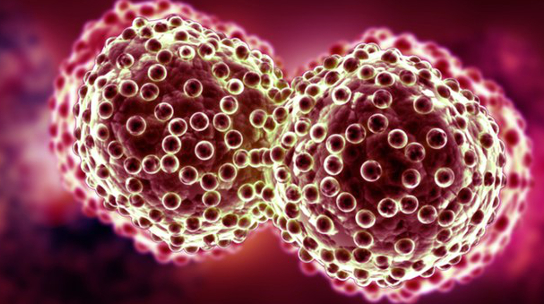

Clusters of gold atoms can detect and kill cancer cells commonly left behind after tumor-removal surgery, according to a study of a new nanotechnology technique. For now, the approach has only been tried in a handful of mice. But the researchers are designing a clinical trial that could begin testing the therapy in humans in the next 2 years. If the technique proves successful in people, it could dramatically improve the odds for cancer patients, particularly in cases where surgically removing an entire tumor is impossible.
When surgeons operate on cancer patients, they do their best to remove every last diseased cell, because any left behind can grow into new tumors or metastasize throughout the body. Oncologists then typically follow up surgery with either radiation treatments or chemotherapy to increase the chances of eliminating any residual tumor cells. But this standard approach to fighting cancer is anything but foolproof.
In recent years, physicians and scientists have looked to nanotechnology for help. One approach pioneered over the last decade by researchers at Rice University in Houston, Texas, and elsewhere has shown that clusters of gold atoms known as nanoparticles can serve as a potent weapon against cancer cells. Solid cancer tumors typically have leaky blood vessels. As a result, when gold nanoparticles are injected into the bloodstream, they tend to seep out of the vessel openings and congregate around tumors. To clean up their surroundings, those cells then often engulf the nanoparticles. But once inside the cells, the nanoparticles can act as Trojan horses. When researchers hit the gold atoms with infrared laser light, which can travel through centimeters of tissue, the particles heat up and kill the cancer cells.
 Unfortunately, the nanoparticle heater strategy has two problems, says Dmitri Lapotko, a physicist formerly with Rice and now head of laser science at Masimo Corporation, a medical nanotechnology company in Irvine, California. The first is that some gold nanoparticles invariably end up in and around normal cells, so healthy tissue can get damaged when the lasers go after cancers. As well, the lasers that are normally used for heating the particles fire continuous beams of infrared light. This too spreads the heat far beyond cancer cells and into the normal tissue. In cases where tumors grow in and around vital tissues, such as nerves or arterial walls, any collateral damage to healthy tissues can be debilitating or dangerous.
In an effort to narrow the therapy’s focus, Lapotko and colleagues sought to modify the approach to zapping nanoparticles. They started with mice that had been implanted with human squamous cell carcinoma, cancer cells common in human head and neck tumors that are particularly difficult to treat with standard therapies. They decorated their gold nanoparticles with immune protein antibodies, which specifically latch onto receptors that sit on the surface of squamous cells. That concentrated the particles, creating clusters of dozens of them in and around cancer cells. And instead of firing continuous laser beams, the researchers fired only ultrashort infrared pulses.
As hoped, this prevented the heat from spreading to surrounding normal tissues. But the approach had an even more important effect: It caused temperatures to rise higher where there were large clusters of gold nanoparticles. This vaporized adjacent water molecules, creating tiny bubbles that quickly expand and burst, ripping apart the cancer cells. They key, Lapotko says, is that “nanoparticle clusters produce nanobubbles in cancer cells and not normal tissue.”
Online today inNature Nanotechnology, Lapotko and his colleagues report that those mini-explosions made it possible not only to pick up sound from where tumor cells were located—and thereby detect the presence of as few as three cancer cells—but it also destroyed the cells in the process. For cases in which it was possible to surgically resect most of the cancer tissue, 100% of the animals survived, thanks to the fact that no residual cancer cells remained alive. And in cases where only partial surgical removal of a tumor was an option, the survival rate for the animals doubled.
“This is very, very interesting,” says Mien-Chie Hung of the University of Texas MD Anderson Cancer Center in Houston, who is exploring treating tumors with nanoparticles. Hung notes that the approach dovetails very well with conventional surgery that is able to remove large tumors but is unable to identify cancer cells that remain behind. The new technique, he says, acts like microscopic surgery to target those residual cells. Hung emphasizes that many oncology approaches that work in animals never wind up as effective in humans. But if this one does, it could open a whole new window into spotting and eliminating residual cancer cells left behind after surgery.
By Robert F. Service Feb. 15. 2016
Images authors: Cameron Scott,University of Notre Dame